简明 ArceOS Tutorial Book
自己动手写组件化操作系统：自顶向下+自底向上的方法
本教程假设读者了解操作系统基本概念和原理，具有常用的 Linux 系统使用经验，并且会使用 Rust 语言编写简单程序。 如果读者不熟悉操作系统和 Rust 语言，希望以自底向上方法从零构建操作系统，[rCore Tutorial Boook v3] 可能是更好的选择。
如果你准备好了，让我们开始吧！
实验环境配置
本章我们将完成环境配置并成功运行 helloworld unikernel。整个流程分为以下几个部分：
OS 环境配置
目前实验内容可支持在 Ubuntu操作系统 上进行操作。
对于 Windows10/11 的用户可以通过系统内置的 WSL2 虚拟机（请不要使用 WSL1）来安装 Ubuntu 22.04，步骤如下：
-
升级 Windows 10/11 到最新版（Windows 10 版本 18917 或以后的内部版本）。注意，如果不是 Windows 10/11 专业版，可能需要手动更新，在微软官网上下载。升级之后， 可以在 PowerShell 中输入
winver命令来查看内部版本号。 -
「Windows 设置 > 更新和安全 > Windows 预览体验计划」处选择加入 “Dev 开发者模式”。
-
以管理员身份打开 PowerShell 终端并输入以下命令：
# 启用 Windows 功能：“适用于 Linux 的 Windows 子系统” >> dism.exe /online /enable-feature /featurename:Microsoft-Windows-Subsystem-Linux /all /norestart # 启用 Windows 功能：“已安装的系统虚拟机平台” >> dism.exe /online /enable-feature /featurename:VirtualMachinePlatform /all /norestart # <Distro> 改为对应从微软应用商店安装的 Linux 版本名，比如：`wsl --set-version Ubuntu 2` # 如果你没有提前从微软应用商店安装任何 Linux 版本，请跳过此步骤 >> wsl --set-version <Distro> 2 # 设置默认为 WSL 2，如果 Windows 版本不够，这条命令会出错 >> wsl --set-default-version 2 # 启用运行 WSL 并安装 Linux 的 Ubuntu 发行版所需的功能，根据向导设置用户名和密码 >> wsl --install
注解👉
由于时间问题我们主要在 Ubuntu22.04 on x86-64 上进行了测试，后面的配置也是基于此环境进行。你也可以在其他 Linux 发行版上进行实验，基本上不会出现太大的问题。如果遇到了问题的话，请在本节的讨论区中留言，我们会尽量帮助解决。
Rust 开发环境配置
首先安装 Rust 版本管理器 rustup 和 Rust 包管理器 cargo，这里我们用官方的安装脚本来安装：
curl https://sh.rustup.rs -sSf | sh
如果通过官方的脚本下载失败了，可以在浏览器的地址栏中输入 https://sh.rustup.rs 来下载脚本，在本地运行即可。
如果官方的脚本在运行时出现了网络速度较慢的问题，可选地可以通过修改 rustup 的镜像地址（修改为中国科学技术大学的镜像服务器）来加速：
export RUSTUP_DIST_SERVER=https://mirrors.ustc.edu.cn/rust-static
export RUSTUP_UPDATE_ROOT=https://mirrors.ustc.edu.cn/rust-static/rustup
curl https://sh.rustup.rs -sSf | sh
或者使用 tuna 源来加速 参见 rustup 帮助：
export RUSTUP_DIST_SERVER=https://mirrors.tuna.tsinghua.edu.cn/rustup
export RUSTUP_UPDATE_ROOT=https://mirrors.tuna.tsinghua.edu.cn/rustup/rustup
curl https://sh.rustup.rs -sSf | sh
或者也可以通过在运行前设置命令行中的科学上网代理来实现：
# e.g. Shadowsocks 代理，请根据自身配置灵活调整下面的链接
export https_proxy=http://127.0.0.1:1080
export http_proxy=http://127.0.0.1:1080
export ftp_proxy=http://127.0.0.1:1080
安装完成后，我们可以重新打开一个终端来让之前设置的环境变量生效。我们也可以手动将环境变量设置应用到当前终端，只需要输入以下命令：
source $HOME/.cargo/env
接下来，我们可以确认一下我们正确安装了 Rust 工具链：
rustc --version
可以看到当前安装的工具链的版本。
rustc 1.70.0 (90c541806 2023-05-31)
警告⚠️
目前适用于操作系统实验开发的 rustc 编译器的版本为 1.73.0，你可以选择更新版本的 rustc 编译器。但注意只能用 rustc 的 nightly 类型的版本。
可通过如下命令安装 rustc 的 nightly 版本，并把该版本设置为 rustc 的默认版本。
rustup install nightly
rustup default nightly
再次确认一下我们安装了正确的 rustc 版本：
sunny@SunnyDream:~$ rustc --version
rustc 1.73.0-nightly (33a2c2487 2023-07-12)
我们最好把软件包管理器 cargo 所用的软件包镜像地址 crates.io 也换成中国科学技术大学的镜像服务器来加速三方库的下载。我们打开（如果没有就新建） ~/.cargo/config 文件，并把内容修改为：
[source.crates-io]
registry = "https://github.com/rust-lang/crates.io-index"
replace-with = 'ustc'
[source.ustc]
registry = "git://mirrors.ustc.edu.cn/crates.io-index"
同样，也可以使用 tuna 源 参见 crates.io 帮助：
[source.crates-io]
replace-with = 'tuna'
[source.tuna]
registry = "https://mirrors.tuna.tsinghua.edu.cn/git/crates.io-index.git"
接下来安装一些Rust相关的软件包
rustup target add riscv64gc-unknown-none-elf
rustup component add llvm-tools-preview
rustup component add rust-src
警告⚠️
如果你更换了另外一个 rustc 编译器（必须是 nightly 版的），需要重新安装上述 rustc 所需软件包。ArceOS 仓库中的
Makefile包含了这些工具的安装，如果你使用make run也可以不手动安装。
至于 Rust 开发环境，推荐 JetBrains Clion + Rust插件 或者 Visual Studio Code 搭配 rust-analyzer 和 RISC-V Support 插件。
注解👉
JetBrains Clion 付费商业软件，但对于学生和教师，只要在 JetBrains 网站注册账号，可以享受一定期限（半年左右）的免费使用的福利。
- Visual Studio Code 是开源软件，不用付费就可使用。
- 当然，采用 VIM，Emacs 等传统的编辑器也是没有问题的。
QEMU 模拟器安装
我们需要使用 QEMU 7.0 版本进行实验，低版本的 QEMU 可能导致框架代码不能正常运行。而很多 Linux 发行版的软件包管理器默认软件源中的 QEMU 版本过低，因此我们需要从源码手动编译安装 QEMU 模拟器软件。下面以 Ubuntu 22.04 上的安装流程为例进行说明：
首先我们安装依赖包，获取 QEMU 源代码并手动编译：
# 安装编译所需的依赖包
sudo apt install autoconf automake autotools-dev curl libmpc-dev libmpfr-dev libgmp-dev \
gawk build-essential bison flex texinfo gperf libtool patchutils bc \
zlib1g-dev libexpat-dev pkg-config libglib2.0-dev libpixman-1-dev libsdl2-dev \
git tmux python3 python3-pip ninja-build
# 下载源码包
# 如果下载速度过慢可以使用我们提供的百度网盘链接：https://pan.baidu.com/s/1dykndFzY73nqkPL2QXs32Q
# 提取码：jimc
wget https://download.qemu.org/qemu-7.0.0.tar.xz
# 解压
tar xvJf qemu-7.0.0.tar.xz
# 编译安装并配置 RISC-V 支持
cd qemu-7.0.0
./configure --target-list=riscv64-softmmu,riscv64-linux-user # 如果要支持图形界面，可添加 " --enable-sdl" 参数
make -j$(nproc)
注解👉
注意，上面的依赖包可能并不完全，比如在 Ubuntu 18.04 上：
- 出现
ERROR: pkg-config binary 'pkg-config' not found时，可以安装pkg-config包；- 出现
ERROR: glib-2.48 gthread-2.0 is required to compile QEMU时，可以安装libglib2.0-dev包；- 出现
ERROR: pixman >= 0.21.8 not present时，可以安装libpixman-1-dev包。
另外一些 Linux 发行版编译 QEMU 的依赖包可以从 这里 找到。
之后我们可以在同目录下 sudo make install 将 QEMU 安装到 /usr/local/bin 目录下，但这样经常会引起冲突。个人来说更习惯的做法是，编辑 ~/.bashrc 文件（如果使用的是默认的 bash 终端），在文件的末尾加入几行：
# 请注意，/path/to是qemu-7.0.0 的父目录，应调整为实际的安装位置
export PATH=$PATH:/path/to/qemu-7.0.0/build
随后即可在当前终端 source ~/.bashrc 更新系统路径，或者直接重启一个新的终端。
此时我们可以确认 QEMU 的版本：
qemu-system-riscv64 --version
qemu-riscv64 --version
警告⚠️
请尽量不要安装
qemu-kvm，这可能会导致我们的框架无法正常运行。另外，我们仅在 Qemu 7.0.0 版本上进行了测试，请尽量不要切换到其他版本。
Q & A
当安装编译所需的依赖包出现Package xxx is not available, but is referred to by another package 错误时，可以尝试更新系统软件源，执行如下命令：
sudo apt-get update
sudo apt-get upgrade
其他工具安装
本节主要介绍 arceos 编译所需的依赖工具的安装。
为了使用 objdump、objcopy 工具，我们首先需要安装名为 cargo-binutils 的命令行工具集：
cargo install cargo-binutils
为了编译运行 C 应用程序，安装 libclang-dev：
sudo apt install libclang-dev
下载并安装 cross-musl-based工具链：
# download
wget https://musl.cc/aarch64-linux-musl-cross.tgz
wget https://musl.cc/riscv64-linux-musl-cross.tgz
wget https://musl.cc/x86_64-linux-musl-cross.tgz
# install
tar zxf aarch64-linux-musl-cross.tgz
tar zxf riscv64-linux-musl-cross.tgz
tar zxf x86_64-linux-musl-cross.tgz
# exec below command in bash OR add below info in ~/.bashrc
export PATH=`pwd`/x86_64-linux-musl-cross/bin:`pwd`/aarch64-linux-musl-cross/bin:`pwd`/riscv64-linux-musl-cross/bin:$PATH
运行 helloworld unikernel
本节介绍如何在 QEMU 模拟器上运行 helloworld unikernel。
-
执行如下命令，获取 ArceOS 源码包：
git clone https://github.com/rcore-os/arceos.git -
进入arceos目录，执行如下命令，编译并运行 helloworld unikernel：
make ARCH=riscv64 A=apps/helloworld run其中，
ARCH 指定 CPU 体系架构，目前支持选项：
riscv64,aarch64，x86_64。A 指定用户程序的相对路径。

到这里，恭喜你完成了实验环境的配置，可以开始阅读教程的正文部分了！
Q & A
当代码跑不起来的时候，可以尝试：
- 分支是否与 原版仓库（而非 fork 出来的仓库）的对应分支同步。如不同步的话考虑通过
git pull进行更新。注：这是因为 Rust 的版本更迭较快，如不及时更新的话曾经能正常运行的代码也会无法运行。 - 项目根目录下的
rust-toolchain非常重要，它代表整个项目采用的 Rust 工具链版本。请务必保持其与原版仓库对应分支一致。 - 通过
make clean或者cargo clean删除构建产物，并重新make run。注：出现这样的问题通常说明框架的构建脚本存在 bug，可以提 issue。
如果怀疑遇到了网络问题，可以检查：
- 请按照本章说明进行 Rust 安装和 crates.io 镜像配置。通常情况下能够解决 Rust 工具链更新和下载已发布到 crates.io 上库的问题。
Unikernel 基本概念
操作系统内核架构
操作系统内核是计算机系统的核心，负责管理硬件资源，包括处理器、内存、磁盘存储等，并为运行在操作系统上的应用程序提供一组接口（系统调用）来访问这些资源。操作系统内核架构是指操作系统内核设计和实现的方式。以下是几种常见的操作系统内核架构：
-
宏内核（Monolithic Kernel）： 宏内核将操作系统的所有服务，如设备驱动、文件系统、网络协议栈和进程调度等都集成在一个大的内核中，运行在内核空间。这种设计使得各个模块可以直接相互通信，因此性能较好。然而，宏内核的缺点是任何一个故障都可能导致整个系统崩溃。另外，由于所有模块都紧密耦合在一起，修改或添加功能也比较困难。Linux和UNIX就是采用宏内核设计的例子。
-
微内核（Microkernel）： 微内核只保留最基本的、必要的服务在内核空间，如进程间通信、内存管理和基本的I/O操作等，其他高级服务例如设备驱动、文件系统等都运行在用户空间。这样的设计使得系统更加稳定，因为即使一个服务出现故障也不会影响到整个系统，同时也使得系统更易于维护和扩展。但在性能方面，由于需要频繁地进行用户空间与内核空间之间的上下文切换，微内核的性能通常低于宏内核。Minix和QNX是采用微内核设计的例子。
-
混合内核（Hybrid Kernel）： 混合内核是试图结合宏内核和微内核的优点的一种设计方式。它尽量将更多的服务放入内核空间执行以提高性能，同时也尽可能地减少模块之间的依赖以增强稳定性。Windows NT和MacOS X的XNU内核都是混合内核的例子。
-
外核（Exokernel）： 外核将传统内核的抽象层次降低，允许应用程序直接管理硬件资源，从而提高效率。在外核架构中，内核仅负责确保资源的安全共享，而具体的资源管理策略则交给应用程序自己去确定。
-
单内核（Unikernel）： 单内核是一种新兴的内核架构，它将应用程序和内核捆绑在一起形成一个单一的可执行映像，该映像可以直接运行在虚拟机或裸机上。单内核适用于云计算和物联网环境，它的优点是体积小，启动快，但对开发者的编程要求较高。
单内核（Unikernel）架构
单内核（Unikernel）架构有如下特点:
-
单一镜像：将应用程序代码与操作系统核心功能合并到一个单一的可执行镜像中。这个镜像包含了应用程序所需的所有组件，包括网络协议、文件系统和设备驱动等。因此，每个 Unikernel 实例都是一个独立的、自包含的单元。
-
定制性：根据应用程序的需求进行定制，只包含必要的组件和库。这种定制性减少了不必要的功能和复杂性，在资源受限的环境下更加高效。
-
轻量级：相比传统操作系统，内存占用更小，启动时间更短。由于只包含必要的组件，它可以更好地适应嵌入式系统、虚拟化环境和云计算平台等资源受限的场景。
-
性能效率：通过减少不必要的软件层和系统调用，减少了性能开销，使得应用程序可以更高效地运行。
总的来说，Unikernel 是一种精简、定制化的操作系统构建技术，旨在提供更高的性能、更低的资源消耗和更强的安全性。它适用于各种场景，包括嵌入式系统、云计算平台和容器化环境等。
为了更好的理解Unikernel，我们对 Unikernel（单一内核）、 Micro Kernel（微内核）、Monolithic Kernel（宏内核）进行对比。
| Unikernel（单一内核） | Micro Kernel（微内核） | Monolithic Kernel（宏内核） | |
|---|---|---|---|
| 架构 | 将应用程序、操作系统内核、必要的组件紧密集成在一起，以创建一个高度定制化和最小化的镜像。 | 采用模块化设计，将操作系统的核心功能最小化，额外的功能和服务实现为用户空间的服务模块。 | 将各种功能和服务集成到一个单体内核中，如进程管理、内存管理、文件系统、网络协议栈等。 |
| 功能分配 | 包含应用程序所需的最小化操作系统功能和库。 | 包含基本的操作系统功能，如进程管理、内存管理和进程间通信，而其他功能如文件系统、网络协议栈等被实现为用户空间的服务模块。 | 包含大量的功能和服务，这些功能和服务直接运行在内核空间，具有较高的集成性和内核级别的访问权限。 |
| 性能 | 镜像小，启动速度快，没有额外的组件和系统调用，具有更高的性能和较低的资源消耗。 | 将功能模块化并移至用户空间，其性能相对较低。模块之间需要进行消息传递和系统调用，会引入额外的开销。 | 内核和服务的紧密集成，有较高的性能 |
| 特权级 | 同一地址空间同一特权级。 | 只有进程管理和进程间通信在内核态 | 所有硬件操作在内核态 |
| 代表系统 | ArceOS、Unikraft、MirageOS、IncludeOS | QNX、MINIX、L4微内核系列 | Linux、Windows |
参考文献
ArceOS设计原则和思路
ArceOS要解决的问题
性能问题
传统宏内核架构和微内核架构的操作系统在性能上有一些可以优化的地方，但在具体实施上又很难做到。
- 如果OS信任APP，那么没有必要建立特权级隔离，这样可以减少特权级上下文切换和不同特权级间数据拷贝的性能开销。
- 如果支持单应用，那么多个地址空间在单个应用程序域中的用处不大，反而会带来性能开销。
- 如果支持功能有限的应用，那么与此无关的的内核功能模块也是没有必要的，这样可以减少内核的体积，减少内核启动时间。
- 传统操作系统通用性的设计会引入不必要的开销，如虚拟文件系统的通用表示对应网络应用引入了不必要的过长执行路径。
- 对应不同应用的需求可以采用不同的内核功能模块，如不同的内存分配算法/调度算法等，以提高整体性能。
安全问题
ArceOS采用了一系列的新技术来解决传统操作系统的安全问题。
- 采用Rust语言开发内核和应用
- 对于Rust应用，尽量避免采用unsafe code进行编码
- 对于C/C++应用，可以与OS一起整体隔离在一个虚拟机中执行
- 采用单应用的架构，避免了不同应用之间的相互干扰
生态问题
ArceOS在架构设计上，虽然目前的重点是基于unikernel架构，但也通过一系列的架构设计，支持宏内核和微内核架构
- 在现有unikernel架构上进行扩展，支持宏内核或微内核架构
- 通过支持Linux ABI，形成libc，支持Linux应用
- 通过支持Linux Syscall，直接支持Linux应用运行
- 通过支持Rust std库，直接支持Rust应用运行
开发问题
操作系统开发一直是一个比较困难的事情，我们看到的实际情况是操作系统（如Linux）随着时间的发展越来越庞大臃肿，难以维护和开发。我们认为将来的操作系统不是像现在统治世界的 Linux、Windows 那样庞大而通用，而是各种可以迅速组合形成的，并且功能丰富多彩的组件化定制操作系统，能够快速适配未来多种多样的处理器、加速器、外设和应用需求，在开发的便捷性、性能和安全性等方面优于已有的通用操作系统。但如何设计组件化定制操作系统是一个需要深入思考的挑战性问题。为此我们一直在思考能否通过基于泛型的独立功能组件来快速构建各种领域专用的OS。
我们认为开发操作系统的痛点是开发者编写操作系统软件很繁琐，需要关注的细节太多。其根本原因是操作系统内部模块广泛的相互依赖带来的软件复杂性，以及操作系统的自包含性带来的软件不可重用性。我们需要把操作系统看出是一个多层次的软件栈，分析操作系统中各个功能的层次划分，各个功能模块具有独立性，从而形成面向操作系统的层次化软件开发方法。
ArceOS的设计原则
我们希望操作系统开发者能够快速创建一个面向特定领域的操作系统内核，且对于每个应用程序，能确保最佳性能、高安全和高可靠的需求，同时能轻松移植现有的应用程序。为此，需要建立如下一些设计原则：
- 单体执行：应用与内核形成一个整体，运行在裸机或虚拟机上。
- 单地址空间：主要针对单个应用程序方案，不同的应用程序通过共享内存或网络通信交互。
- 单保护域：应用程序与内核运行在同一特权级，应用程序可以直接访问内核的数据结构和硬件资源。
- 与OS无关的内核功能组件：形成广泛的内核功能组件，可在没有OS的情况下独立运行和测试。
- 与硬件无关的内核功能组件：形成广泛的内核功能组件，可在不同的硬件平台上运行。
- 支持Linux ABI：支持Linux应用程序运行。
- 支持Rust std库：支持Rust应用程序运行。
- 架构可扩展：除了单体内核架构，也可扩展威微内核架构和宏内核架构。
简而言之，ArceOS是一个基于Rust语言的Unikernel，它的目标是为云计算平台提供一种高性能、高可靠、高安全、易开发的操作系统解决方案。ArceOS的设计思路是将操作系统的核心功能和应用程序紧密集成在一起，形成一个单一的可执行镜像，这个镜像包含了应用程序所需的所有功能组件，包括网络协议、文件系统和设备驱动等。而组成ArceOS的功能组件是可以独立存在的，并可以与其它功能组件组合，形成新的领域操作系统内核。
参考文献
ArceOS 框架设计
ArceOS的整体架构如下所示：
ArceOS 是一个开源的、组件化的Unikernel。以组合组件库的方式构建系统。使用Rust开发。
具有一下特点和功能:
- CPU架构: x86_64, riscv64, aarch64
- 运行平台: QEMU pc-q35 (x86_64), virt (riscv64/aarch64)
- 支持多线程: Multi-thread
- 调度算法: FIFO/RR/CFS scheduler
- 虚拟IO: VirtIO net/blk/gpu drivers
- 网络协议: TCP/UDP net stack using smoltcp
- 同步/互斥: Synchronization/Mutex
- SMP调度: SMP scheduling with single run queue
- 文件系统: File system
ArceOS 由apps、crates、modules组成
- apps: 应用程序。它的运行需要依赖于modules组件库。
- modules: ArceOS的组件库。
- crates: 通用的基础库。为modules实现提供支持。
当前ArceOS项目的apps列表如下:
Applications (Rust)
| App | Extra modules | Enabled features | Description |
|---|---|---|---|
| helloworld | A minimal app that just prints a string | ||
| exception | paging | Exception handling test | |
| memtest | axalloc | alloc, paging | Dynamic memory allocation test |
| display | axalloc, axdisplay | alloc, paging, display | Graphic/GUI test |
| yield | axalloc, axtask | alloc, paging, multitask, sched_fifo | Multi-threaded yielding test |
| parallel | axalloc, axtask | alloc, paging, multitask, sched_fifo, irq | Parallel computing test (to test synchronization & mutex) |
| sleep | axalloc, axtask | alloc, paging, multitask, sched_fifo, irq | Thread sleeping test |
| priority | axalloc, axtask | alloc, paging, multitask, sched_cfs | Thread priority test |
| shell | axalloc, axdriver, axfs | alloc, paging, fs | A simple shell that responds to filesystem operations |
| httpclient | axalloc, axdriver, axnet | alloc, paging, net | A simple client that sends an HTTP request and then prints the response |
| echoserver | axalloc, axdriver, axnet, axtask | alloc, paging, net, multitask | A multi-threaded TCP server that reverses messages sent by the client |
| httpserver | axalloc, axdriver, axnet, axtask | alloc, paging, net, multitask | A multi-threaded HTTP server that serves a static web page |
| udpserver | axalloc, axdriver, axnet | alloc, paging, net | A simple echo server using UDP protocol |
Applications (C)
| App | Extra modules | Enabled features | Description |
|---|---|---|---|
| helloworld | A minimal C app that just prints a string | ||
| memtest | axalloc | alloc, paging | Dynamic memory allocation test in C |
| sqlite3 | axalloc, axdriver, axfs | alloc, paging, fp_simd, fs | Porting of SQLite3 |
与具体 OS 无关的 crates
Crates为Modules实现提供更底层的支持，通用的基础库，与os无关。
Crates 列表
- allocator: 内存分配算法，包括：bitmap、buddy、slab。
- arm_gic: ARM通用中断控制器 (GICv2) 。
- arm_pl011: ARM串行通信接口，用于处理器和外部设备之间的串行通信 。
- axerrno: ArceOS的错误码定义。
- axfs_devfs: ArceOS的设备（Device）文件系统，是axfs_vfs一种实现。
- axfs_ramfs: ArceOS的内存（RAM）文件系统，是axfs_vfs一种实现。
- axfs_vfs: ArceOS的虚拟文件系统接口。
- axio: no_std环境下的I/O traits 。
- capability: Capability-based security 通过设置访问权限控制对系统资源的访问。
- crate_interface: 提供一种在 crate 中定义接口（特征）的方法，其目的是解决循环依赖。
- driver_block: 通用的块存储（磁盘）驱动程序的接口定义。
- driver_common: ArceOS的通用设备驱动接口定义，包括：disk、serial port、 ethernet card、GPU。
- driver_display: 通用的图形设备驱动程序接口定义。
- driver_net: 通用的网络设备 (NIC) 驱动程序定义。
- driver_pci: 定义对PCI总线操作。
- driver_virtio: 实现在driver_common定义的驱动。
- flatten_objects: 为每个存储对象分配一个唯一的ID。
- handler_table: 无锁的事件处理程序表。
- kernel_guard: 利用RAII创建具有本地IRQ或禁用抢占的临界区，用于在内核中实现自旋锁。
- lazy_init: 延迟初始化。
- linked_list: 链表。
- memory_addr: 提供理物理和虚拟地址操作的辅助函数。
- page_table: 页表。
- page_table_entry: 页表项。
- percpu: per-CPU的数据结构。
- percpu_macros: per-CPU的数据结构的宏实现。
- ratio: 比率相关计算。
- scheduler: 统一的调度算法接口，包括：cfs、fifo、round_robin。
- slab_allocator: no_std 环境下的 Slab 分配器（一种内存管理算法）。
- spinlock: no_std 环境下的自旋锁实现。
- timer_list: 定时器，在计时器到期时触发。
- tuple_for_each: 提供遍历tuple字段的宏和方法。
与具有 OS 相关的 modules
Modules是AcreOS的组件集合。
Modules 列表
- axalloc: ArceOS 的全局内存分配器.
- axconfig: ArceOS 特定平台编译的常量和参数配置。
- axdisplay: ArceOS 的图形化模块。
- axdriver: ArceOS 的设备驱动模块。
- axfs: ArceOS 的文件系统模块。
- axhal: ArceOS硬件抽象层，为特定平台的操作提供统一的API。
- axlog: ArceOS 多个级别日志记录宏，包括：error、warn、info、debug、trace。
- axnet: ArceOS 的网络模块，包括：IpAddr、TcpSocket、UdpSocket、DnsSocket等。
- axruntime: ArceOS 的运行时库，是应用程序运行的基础环境。
- axsync: ArceOS 提供的同步操作模块，包括：Mutex、spin。
- axtask: ArceOS 的任务调度管理模块，包括：任务创建、调度、休眠、销毁等。
设计实现 helloworld unikernel
通常，我们在学习一门新的编程语言时，接触的第一个示例程序就是 helloworld，当一名新的程序员清除完一切障碍顺利抵达 helloworld 时，他的内心体验到的不仅仅是一种成功的喜悦，更重要的是，他正在亲身经历一个跨越历史的时刻。各位，你还记得你第一次写的 helloworld 吗？
这一章，我们将沿袭前人之路，以 helloworld 来开启沟通 ArceOS 世界的历程。我们将通过从零开始设计实现一个 helloworld unikernel，来直接感受 ArceOS 的理念、特性。
1 回顾 ArceOS
ArceOS 是一个实验性的，基于 unikernel 的组件化操作系统，具有以下特性：
- 组件化：以组件粒度组装适应各种应用需求的操作系统。
- 以应用为中心(unikernel)：面向应用，依照依赖链，选出最小的必要组件集合，构造操作系统。
- 组件区分系统相关和系统无关：识别具有通用功能的组件，可以为其它操作系统所复用。
- 利用 Rust 机制：以 crate 对应组件，trait 对应接口，dependencies+features 的方式对组件进行组织。
2 helloworld unikernel 功能需求分析
首先，我们一起来看一下即将实现的 helloworld unikernel 到底是什么？与我们往常学习编程语言的 helloworld 示例程序有什么区别？
#include <stdio.h>
int main()
{
printf("hello world!");
return 0;
}
以这个 C 语言编写的 helloworld 程序为例，可以发现，无论是这个 helloworld 示例程序，还是现在的 helloworld unikernel，核心功能都是向屏幕打印 ”hello world“ 字符串。
不同的是，在绝大多数情况下（不考虑嵌入式系统），如果我们尝试把c语言程序编译好的二进制程序直接放在一个裸机环境上是不能够运行的，因为缺少它依赖的各种服务和资源，缺乏和硬件交互的能力。也就是说，如果要在一台裸机上部署这个应用，至少需要安装一个操作系统，然后才能令这个 helloworld 成功运行。
而对于 helloworld unikernel 来讲，它是一个 helloworld 应用+最小支撑运行环境的集合，在一台裸机上进行烧录，就可以执行 helloworld 程序。
总结一下，helloworld unikernel 是一个能够运行 helloworld 程序的 unikernel image。再进一步，结合 unikernel 的定义来讲，helloworld unikernel 是通过打包必要的 ArceOS 组件，专门用来支撑 helloworld 程序运行的单地址空间机器镜像。具备如下功能：
- 首先，作为 unikernel，或称为 libOS，能够引导本系统运行（在裸机上搭建 helloworld 应用所需的必要运行环境）；
- 其次，具备 helloworld 的基本功能，能够输出如下信息到屏幕：
Hello, world！I am arceOS！
接下来，我们将结合 ArceOS 的特性，从简单到复杂，将 helloworld unikernel 功能逐步分解，从单个组件到三个组件，然后引入分层和 feature 的概念，最终向用户呈现一个简洁、规范的实现过程。
依靠 axhal 组件实现从系统引导到输出
在这一节，我们尝试单纯借助 axhal 组件实现 helloworld unikernel 从系统引导到输出字符的功能，为此需要对默认的 axhal 代码做一点修改。
初探 axhal 组件
我们都知道，输出都是通过硬件完成的，正如你现在正在看的这份文档，它能显示在屏幕上都得益于我们的操作系统为我们封装好了硬件操作并能够执行它。但是我们的目标不正是写一个操作系统吗，所以很遗憾我们只能自己添加上与硬件相关的层的封装了，axhal 应运而生。
graph TD axhal
在 ArceOS 中，axhal 组件提供了一层针对不同硬件平台的硬件封装，它为指定的操作平台进行引导和初始化过程，并提供对硬件的操作。例如 modules/axhal/src/platform/qemu_virt_riscv/console.rs 里面提供了对字符输出的封装，我们可以直接调用其中的 putchar 函数进行字符的输出，而不是一次又一次地使用 sbi 这样汇编级别的代码进行输出。
其实在 ArceOS 里面，putchar函数经过了许多层的封装已经变成类似于 print 这样方便用户使用的函数了，helloworld unikernel 里面的输出调用链可以查看本章第三部分， 但其实 helloworld 输出的本质还是调用 axhal 组件的putchar函数，接下来让我们抛掉方便用户调用的封装，通过对 axhal 代码的一些修改，来直观地感受一下系统启动和调用 axhal 所提供的 putchar 函数进行输出的流程。
动手尝试
以 qemu_virt_riscv 平台为例， 我们首先关注 modules/axhal/src/platform/qemu_virt_riscv/boot.rs 这个文件， 其中的 _start() 函数被链接到 ".text.boot" 段， 作为 ArceOS 运行的第一段代码。具体的不同段的分配可以查看 modules/axhal/linker.lds.S 文件。
接下来我们尝试在里面直接调用 ArceOS 为我们封装好的 sbi 函数进行输出，首先添加 console_putchar 函数方便输出我们想要输出的结果。
#![allow(unused)] fn main() { use crate::console::putchar; unsafe fn console_putchar() { putchar(10); // 打印换行符 putchar(72); // 打印"H“ putchar(69); // 打印"E“ putchar(76); // 打印"L“ putchar(76); // 打印"L“ putchar(79); // 打印"O“ // 下面可以输出任何想要的内容， 只需更改参数即可 } }
然后我们需要在代码中加入对 console_putchar 函数的调用， 我们需要在初始化页表之后， 初始化 mmu 之前执行 console_putchar 函数。 并且添加
#![allow(unused)] fn main() { console_putchar = sym console_putchar, }
这一行， 以便汇编代码调用我们写的console_putchar函数
然后我们在初始化页表之后和初始化mmu之前调用输出：
#![allow(unused)] fn main() { call {init_boot_page_table} call {console_putchar} call {init_mmu} }
// TODO! 完整的代码 (boot.rs) 见实验部分
此时我们只需执行:
make PLATFORM=riscv64-qemu-virt A=apps/helloworld run
如无意外， 我们在打印 ArceOS 的 LOGO 之前看到了我们调用 putchar 函数进行的输出 "HELLO FROM SBI"， 当然，每个字符的输出只需要在 console_putchar 中自行添加即可。

总结
至此，我们已经完成了从系统引导到输出的最小流程， 而且从开机到输出这个过程不依赖于 axhal 外的任一组件，并且是可以在真实的硬件环境中(例如 CV1811H 的 riscv 开发板)进行输出的， 这也体现了 ArceOS 的设计思路， 我们只需要复用这一个模块，就能很方便地对硬件进行操作了。
附录
axhal 模块简介：
模块源码位置：modules/axhal
功能描述： ArceOS的硬件抽象层，负责为不同操作平台提供统一的API。它为指定的操作平台进行引导和初始化过程，并在硬件上提供有用的操作。当前主要支持pc-x86、qemu-virt-riscv、qemu-virt-aarch64`等平台。
关于这部分的一些思路来源和背景补充：
当我们尝试在 CV1811H 开发板上移植ArceOS时，我们发现 uboot 引导后在开发板上没有任何的输出，而我们解决这个问题的办法就是抛弃掉上层的复杂的输出封装，使用最原始的 sbi_call 函数（当时也没有使用ArceOS包装好的putchar函数）在axhal 中进行输出。依靠这个最简单的输出，我们初步地移植了ArceOS到 CV1811H 开发板上。实际上，从引导部分的代码也可以看出，axhal 是一个不可分割的组件，它就像一个封装好的库供上层调用，这也意味着单独为其开一节教程不足以展示它的所有功能，我们所希望的是通过输出这一小功能，让大家感知到这个最底层的 axhal 模块。
helloworld 程序基于 axhal 组件实现输出
按照上一部分，既然 axhal 组件已经为我们准备好了 putchar 输出函数，其实我们已经可以编写 helloworld 程序进行输出了，如果关注了第三部分中 helloworld 运行的完整流程图就可以发现 helloworld 的运行还依赖于 libax，libax 就是提供一层类似于库函数的封装，它实现输出的本质还是用到我们提到的 axhal 中的输出，我们在此部分更多考虑地是 helloworld 与 axhal 组件进行搭配并且输出的过程，libax 可以看成是 helloworld 程序的一部分。
动手尝试
graph TD helloworld --> axhal
我们看到 boot.rs 的汇编代码最后有一段跳转到 entry 的代码， 目前来说，ArceOS 运行到这里之后，就会跳转到 rust_entry 函数（在axhal/src/platform/qemu_virt_riscv/mod.rs 文件中），这个函数会执行一些初始化流程，然后调用rust_main 函数（在 modules/axruntime/src/lib.rs 文件中）， rust_main 函数会根据选择的 feature 进行初始化的流程， 最后会调用应用程序的 main 函数。
为避免引入过多组件， 我们直接将 axhal/src/platform/qemu_virt_riscv/mod.rs 里面 rust_entry 中调用的 rust_main() 函数换成应用程序的 main 函数(记得要在上面 extern 引用 main 函数)， 并加上一行 self::misc::terminate()， 方便 arceos 运行完程序后终止，以防止ArceOS卡死不能正常退出（目前退出的功能依赖于下一部分提到的axruntime组件）。
axhal/src/platform/qemu_virt_riscv/mod.rs
extern "C" { fn trap_vector_base(); fn rust_main(cpu_id: usize, dtb: usize); fn main(); // 从外部引入main函数 #[cfg(feature = "smp")] fn rust_main_secondary(cpu_id: usize); } unsafe extern "C" fn rust_entry(cpu_id: usize, dtb: usize) { crate::mem::clear_bss(); crate::cpu::init_primary(cpu_id); crate::arch::set_trap_vector_base(trap_vector_base as usize); // rust_main(cpu_id, dtb); main(); // 跳转到应用程序的main函数 self::misc::terminate(); // 程序运行后终止 }
执行:
make PLATFORM=riscv64-qemu-virt A=apps/helloworld run
如无意外， helloworld成功输出！说明我们的思路是正确的，将要输出的内容通过 helloworld 传递给 axhal，这样只需要两个组件就能实现应用程序 helloworld 的运行和输出。

总结
其实 helloworld 程序本质还是调用 axhal 的 sbi 输出功能（具体步骤见第三部分流程图），我们把两个组件结合了起来！这也体现了 ArceOS 的思想，只需要把需要的部分组合起来就能实现我们想要的功能。
附录
添加 axruntime 组件提供更完整的运行环境
之所以将 helloworld 的 main 函数和 axhal 组合起来就能实现输出功能，是因为 helloworld 应用程序只用到了 axhal 提供的裸机输出功能， 如果我们需要支持更复杂的应用，axhal 提供的低级的裸机环境肯定不能满足我们的需求， 那么就需要用到 axruntime 这个更强大的组件了。
axruntime 的主要功能是在进入应用程序的 main 函数之前执行一些初始化操作， 根据所选择的不同 feature 执行相对应的初始化过程。
graph TD helloworld --> axruntime --> axhal
在这一节中我们直接使用 ArceOS 的源代码，将之前修改的代码还原，在 axhal 执行完后不是直接跳转到应用程序的 main 函数， 而是跳转到 axruntime 这个组件的 rust_main 函数，再跳转到 helloworld 的 main 函数。
动手尝试
运行命令：
make PLATFORM=riscv64-qemu-virt A=apps/helloworld run LOG=debug
运行结果如下图，下面的调试输出信息绿色字体部分可以为我们直观地展示 axruntime 做的一些初始化的工作。

有了这三个组件，我们不仅能运行 helloworld 这样的简单程序，还能运行稍微复杂一些的程序。
例如，运行 yield 应用程序 (FIFO scheduler):
make A=apps/task/yield PLATFORM=riscv64-qemu-virt LOG=info NET=y SMP=1 run
运行结果:

运行过程分析
让我们通过流程图看看 ArceOS 的运行背后到底发生了什么。
第一步是一些初始化函数的调用过程。
Step 1
graph TD;
A[axhal::platform::qemu_virt_riscv::boot.rs::_boot] --> init_boot_page_table;
A --> init_mmu;
A --> P[platform_init];
A --> B[axruntime::rust_main];
P --> P1["axhal::mem::clear_bss()"];
P --> P2["axhal::arch::riscv::set_trap_vector_base()"];
P --> P3["axhal::cpu::init_percpu()"];
P --> P4["axhal::platform::qemu_virt_riscv::irq.rs::init()"];
P --> P5["axhal::platform::qemu_virt_riscv::time.rs::init()"];
B --> axlog::init;
B --> D[init_allocator];
B --> remap_kernel_memory;
B --> axtask::init_scheduler;
B --> axdriver::init_drivers;
B --> Q[axfs::init_filesystems];
B --> axnet::init_network;
B --> axdisplay::init_display;
B --> init_interrupt;
B --> mp::start_secondary_cpus;
B --> C[main];
Q --> Q1["disk=axfs::dev::Disk::new()"];
Q --> Q2["axfs::root::init_rootfs(disk)"];
Q2 --fatfs--> Q21["main_fs=axfs::fs::fatfs::FatFileSystem::new()"];
Q2 --> Q22["MAIN_FS.init_by(main_fs); MAIN_FS.init()"];
Q2 --> Q23["root_dir = RootDirectory::new(MAIN_FS)"];
Q2 --devfs--> Q24["axfs_devfs::DeviceFileSystem::new()"];
Q2 --devfs--> Q25["devfs.add(null, zero, bar)"];
Q2 -->Q26["root_dir.mount(devfs)"];
Q2 -->Q27["init ROOT_DIR, CURRENT_DIR"];
D --> E["In free memory_regions: axalloc::global_init"];
D --> F["In free memory_regions: axalloc::global_add_memory"];
E --> G[axalloc::GLOBAL_ALLOCATOR.init];
F --> H[axalloc::GLOBAL_ALLOCATOR.add_memory];
G --> I["PAGE: self.palloc.lock().init"];
G --> J["BYTE: self.balloc.lock().init"];
H --> K["BYTE: self.balloc.lock().add_memory"];
I --> M["allocator::bitmap::BitmapPageAllocator::init()"];
J -->L["allocator::slab::SlabByteAllocator::init() self.inner = unsafe { Some(Heap::new(start, size)) } "];
K --> N["allocator::slab::SlabByteAllocator::add_memory: self.inner_mut().add_memory(start, size);"];
下面是 helloworld 程序的运行流程，实际上 helloworld 程序最后调用的是 axhal 封装好的输出功能，本质还是依靠 sbi 进行输出。
Step 2
graph TD;
A[main] --> B["libax::println!(Hello, world!)"];
B --> C[libax:io::__print_impl];
C --> D[INLINE_LOCK=Mutex::new];
C --> _guard=INLINE_LOCK.lock;
C --> E["stdout().write_fmt(args)"];
step 2.1
graph TD;
T["stdout()"] --> A["libax::io::stdio.rs::stdout()"];
A --> B["INSTANCE: Mutex<StdoutRaw> = Mutex::new(StdoutRaw)"];
A --> C["return Stdout { inner: &INSTANCE }"];
step 2.2
graph TD;
T["stdout().write_fmt(args)"] --> A["Stdout::write"];
A --> B["self.inner.lock().write(buf)"];
B --> C["StdoutRaw::write"];
C --> D["axhal::console::write_bytes(buf);"];
C --> E["Ok(buf.len())"];
D --> F["putchar"];
F --> G["axhal::platform::qemu_virt_riscv::console::putchar"];
G --> H["sbi_rt::legacy::console_putchar"];
总结
至此，我们已经完成了从 axhal 到 axruntime 到 helloworld 的组合了，并且将 helloworld unikernel 运行了起来。
附录
-
axruntime模块简介： -
模块源码位置：modules/axruntime
- 功能描述：在进入应用程序的 main 函数之前执行一些初始化操作， 根据所选择的 feature 执行相对应的初始化过程。
-
流程图来源：
-
step 1 init
-
step 2 helloworld
-
由开启动态内存分配特性来初识系统相关和无关
前三个阶段总结
在之前的部分中，我们以向屏幕打印“hello world”为目标，由简入繁，共经历了三个阶段，让我们做一个简单的总结：
第一阶段，“未有天地之时，混沌状如鸡子”，构建一个可以与硬件交互的最小运行环境 axhal，也可以理解为，我们在完成引导和必要功能初始化之后就可以直接调用对应平台的汇编指令来实现打印 helloworld 的功能，此时用户所需功能（向屏幕打印“hello world”）和运行时环境是混合在一起的。
第二阶段，“清轻者上升为天，重浊者下降为地”，上一阶段的程序分裂成 axhal+helloworld， 尝试将打印 helloworld 功能进行分离并扩展，令 helloworld 扩展成一个独立的 app。该阶段需要定义程序入口，我们尝试在 axhal 中设置入口点，令 axhal 经过引导之后直接跳转到 helloworld 中执行相应功能。
第三阶段，“天生日月星辰，地生山川草木”，第二阶段的两个模块进一步分裂并扩展为 axhal+axruntime+helloworld，我们不满足于用户直接基于 axhal 提供的低级的裸环境来进行开发，所以将 axhal 包装并扩展成 axruntime 来提供各种运行时必要组件，和 axhal 相比，axruntime 掩盖了与底层硬件交互的复杂原理，此时 helloworld 的运行环境由直接依赖于 axhal 变成了更为高级更为强大的 axruntime。
系统无关和系统相关
可以说在之前的部分中，就已经很好的体现出 ArceOS 形如细胞一样的强大分裂和扩展的功能。前三个阶段打印到屏幕的文字的实际存储位置位于 .text 段，由底层运行环境进行静态分配并管理的，这种管理方式的优势是开销小，性能高，缺点是灵活性不足。
如果我们想尝试使用动态分配的类型怎么办？具体来说，我们想创建一个 String 类型的字符串，然后通过 println 的格式化功能将组装后的字符串打印到屏幕。这个功能应该如何实现呢？
进一步分析上述的需求，发现我们的目的其实是操作系统 ArceOS 为用户的应用程序 helloworld 提供内存分配支持，那么如何优雅地为用户提供这种支持成了我们目前首要的目标。
回想一下上一个章对 Unikernel 这个概念的讲解，操作系统种类繁多，但是通过将各个功能进行深入拆分和罗列，发现支撑操作系统的功能模块其实有共性可言，比如一个操作系统想要实现多个任务切换，那这个操作系统一定要涉及到任务（进程）的调度算法，而这种可以分离成单独的模块甚至可以被其他操作系统所复用的特点，在 ArceOS 的设计体系中我们称之为系统无关；而相反，前面涉及到的 axhal 和 axruntime，是 ArceOS 本身利用系统无关的组件为用户程序打造运行时环境的特定实现方式，这种组合扩展方式是不同于其他操作系统的。所以这类模块我们称其为系统相关，代表了操作系统通过系统无关组件来打造用户程序运行环境的独特方式，无法被其他系统所复用。
具体到 ArceOS 的源码组成部分来看，目前 crates 文件夹下的模块属于是系统无关的模块，这些库可以理解为构建一个操作系统所需要的底层共性，我们以松耦合，高抽象的方式开发这些库，目的是后续可以为别的系统复用。modules 下的模块是 ArceOS 为了想要实现操作系统的必要功能而对 crates 的各种库组合和扩展后，更加接近用户应用层的抽象模块。
动手尝试
讲解完这两个基本概念，回到动态分配内存这个主题上，根据之前分类的标准，很容易发现动态分配特性是属于系统无关的，基于之前的调用依赖图，我们可以将其更新为如下图所示：
graph TD
helloworld-->modules;
subgraph modules;
axruntime-->axhal;
end
modules-->crates;
subgraph crates;
allocator;
end
这里我们简化了一下，没有涉及到其他辅助类的模块的展示，只展示了必要的功能依赖链。
具体体现在代码中，首先，我们修改 apps/helloworld/Cargo.toml，添加开启动态内存分配的特性：
[dependencies]
axstd = { path = "../../ulib/axstd", features=["alloc"], optional = true } #尝试添加动态分配内存的feature
之后，我们修改 apps/helloworld/src/main.rs，尝试使用 alloc 特性提供的动态分配内存功能：
#![cfg_attr(feature = "axstd", no_std)] #![cfg_attr(feature = "axstd", no_main)] use axstd::println; // 为 helloworld 提供可以动态内存分配的字符串类型 use axstd::string::String; #[cfg_attr(feature = "axstd", no_mangle)] fn main() { // 声明并初始化一个 String 字符串 let s = String::from("I am ArceOS!"); println!("Hello, world! {}", s); }
运行make PLATFORM=riscv64-qemu-virt A=apps/helloworld run，此时运行结果如下图所示：

打印出”Hello world! I am ArceOS"，说明我们成功为 helloworld 提供了动态内存分配功能。
总结
其实像这种 ArceOS 在用户看不见的地方根据用户选择的特性需求，组装并扩展各种模块提供定制的运行环境，其实就是 ArceOS 的组件化运作的核心机制。我们从最简单的 helloworld 使用动态内存分配特性出发，“窥一斑而知全豹”，来触及 ArceOS 的核心运作机制。在后续的章节中我们会为读者展示 ArceOS 更为强大的功能特性，其功能运作的基本原理和 helloworld 是大体相似的，相信读者理解了这部分的内容，后续章节理解起来会更为顺畅一些。
附录
allocator 模块简介：
模块源码位置：crates/allocator
功能描述： allocator 模块提供了一个统一的接口，用于实现不同类型的内存分配器算法。该模块共包括三种不同类型的分配器：字节粒度内存分配器 (ByteAllocator)、页粒度内存分配器 (PageAllocator) 和唯一 ID 分配器 (IdAllocator)。每种分配器都有其特定的实现方式，例如 BuddyByteAllocator 和 SlabByteAllocator 对应的是字节粒度内存分配器，而 BitmapPageAllocator 对应的是页粒度内存分配器。这个模块使得不同的内存分配器可以更加灵活地组合和替换，实现更加高效和可靠的内存管理功能。
ArceOS 设计思想推荐阅读：像开发应用一样开发操作系统
修改命令实现对features的细粒度控制
动手尝试
这部分讲的是用户可以通过修改运行命令的内容，来进一步细粒度的控制特性，这个部分比较简单，读者可以很轻松地完成。
以向屏幕打印日志信息为例，如果想要修改日志的过滤等级，例如，展示出 warn 级以上的日志（info 日志不会打印到屏幕上），可以修改原来的运行命令，这里还是以 qemu risv64 平台为例，原始命令为：
make A=apps/helloworld PLATFORM=riscv64-qemu-virt LOG=info run
尝试运行一下，发现 info 以上级别的日志会被打印出来（提示：绿色字体所在行为 info 级别的日志信息）：

如果修改 log 日志等级：
make A=apps/helloworld PLATFORM=riscv64-qemu-virt LOG=warn run
此时能够展示日志的最低级别提高到 warn，之前 info 级别的日志不会被打印到屏幕中，尝试运行上述命令，运行结果如下：

我们可以看到之前展示出来绿色字体的 info 日志行都消失了。
实现原理
feature 的参数控制也是 ArceOS 的强大功能之一，和之前的部分不同，用户从开启或关闭 feature 变成了具体调整 feature 特性的参数，以达到自己所需要的最佳环境支持。用户通过运行命令来调整 feature 的流程可以用下图来表示：
graph TD
Client-->|features|helloworld
helloworld-->|features|modules;
subgraph modules;
axruntime-->axhal;
end
modules-->crates;
subgraph crates;
allocator;
end
结合图中展示和具体实现部分，用户 (Client) 通过命令传递想要控制的参数，自顶往下由 helloworld 传递到 modules，最终抵达 modules/axruntime/src/lib.rs(123 行)axlog::set_max_level(option_env!("LOG").unwrap_or(""));这行代码, 接收用户在命令上设置的LOG控制参数来实现对日志过滤等级的控制。
总结
用户通过命令进行其他参数控制也经历类似于 LOG 的 feature 传递，然后抵达真正的实现位置，将用户设置应用到系统上。虽然可能自顶向下的寻找路线不同（需要达到 不同 feature 对应的功能模块），所需要的路径长短不同（要控制的 feature 可能需要和硬件驱动进行交互），但是核心思想都是一致的。可以类比为用户是一个操控者，通过手中的线（feature 命令参数）来控制木偶（ArceOS）来达到他想要的展示动作（运行环境）。

设计实现协作式多任务unikernel
在操作系统设计中，如何确保同时处理多个请求？我们可以使用线程或进程进行多任务处理实现，但还有一个选择——协作性多任务处理。
这个选项是最困难的。在这里我们说操作系统当然很酷，它有调度程序和计划程序，它可以处理进程，线程，组织它们之间的切换，处理锁等，但它仍然不知道应用程序是如何工作的，而这些工作原理应该是我们作为开发人员所知道的。
我们知道在CPU上会有短暂的时刻执行某些计算操作，但大多数时候我们都期望网络I/O能更清楚何时在处理多个请求之间切换。
从操作系统的角度来看，协作式多任务只是一个执行线程，在其中，应用程序在处理多个请求/命令之间切换。通常情况是：只要一些数据到达，就会读取它们，解析请求，将数据发送到数据库，这是一个阻塞操作；而非堵塞操作时在等待来自数据库的响应时，可以开始处理另一个请求，它被称为“合作或协作”，因为所有任务/命令必须通过合作以使整个调度方案起作用。它们彼此交错，但是有一个控制线程，称为协作调度程序，其角色只是启动进程并让这些线程自动将控制权返回给它。
这比线程的多任务处理更简单，因为程序员总是知道当一个任务执行时，另一个任务不会执行，虽然在单处理器系统中，线程应用程序也将以交错模式执行这种模型，但使用线程的程序员仍应考虑此方法的缺陷，以免应用程序在移动到多处理器系统时工作不正常。但是，即使在多处理器系统上，单线程异步系统也总是以交错方式执行。
编写这样的程序的困难在于，这种切换，维护上下文的过程，将每个任务组织为一系列间歇性执行的较小步骤，落在开发人员身上。另一方面，我们获得了效率，因为没有不必要的切换，例如，在线程和进程之间切换时切换处理器上下文没有问题。
在实现了Hello World编写和运行之后，我们终于可以首窥操作系统内核设计中的第一个重要部分：协作式多任务的实现。
协作式多任务的功能需求
协作式多任务的主体实现
协作式多任务是一种任务调度方式，它与抢占式多任务(preemptive)相对应，关于后者，我们将在下一章详细说明。在本章学习中，我们先要了解“non-preeptive"——或者说是协作的调度方式。比起抢占，它显得更加友善而不具有侵略性。要设计一个协作式多任务的unikernel，需要满足这些要求：
-
任务切换机制：实现任务的切换和调度，确保多个任务在适当的时候轮流执行。任务切换应该是协作式的，即任务自愿放弃执行权，而不是由系统强制进行切换。这部分的需求确定了unikernel需要依赖于
axtask这一module以及multitask、sched_fifo、sched_cfs等任务管理相关的crates。 -
上下文保存与恢复：在任务切换时，需要保存当前任务的上下文（包括寄存器、程序计数器、堆栈等状态），以便后续能够正确地恢复该任务的执行状态。这也包括了允许任务在运行过程中主动挂起自己，将执行权让给其他任务。同时，需要提供相应的机制来恢复挂起的任务继续执行。
-
任务优先级管理：支持为不同的任务设置优先级，以确保高优先级的任务在系统资源有限时能够优先得到执行。在ArceOS支持的app中，
apps_priority实现了这个目标。 -
任务同步与通信：提供机制来实现任务之间的同步和通信，以防止竞态条件和数据访问冲突。在ArceOS中，我们可以参考app
parallel了解具体的实现。 -
定时器和延时：提供定时器功能，允许任务在一定时间后唤醒或执行延时操作。在ArceOS中，我们可以参考app
sleep了解具体的实现。
可以感受到，比起Hello World，实现协作式多任务涉及到的modules和crates、调用了它们实现的app都大为增加。
调试和运行需求
在Hello World的实现过程中，我们已经初步了解了ArceOS从代码再到硬件的落地，最后在嵌入式设备实机运行的过程。在本章，读者可以利用上一章的经验，在硬件设备对生成的二进制镜像进行调试。为此，在最终烧录时ArceOS也将实现开发者的调试和改造需求：
-
异常处理：处理任务执行过程中可能出现的异常情况，例如任务错误、内存越界等情况。这些比较难处理的错误需要日志的打印来实现，具体操作我们沿用了HelloWorld中的处理，同时引入了app
exception细化异常打印日志。 -
系统可扩展性：设计具有良好可扩展性的任务管理机制，允许动态地创建和销毁任务，以适应不同应用场景和任务数量的需求。在实现这个unikernel的app中（
parallel、priority、sleep、yield），我们都进行了编译内核数、架构、日志输出粒度等的自由设置。
这些功能需求可以根据不同的应用场景和系统设计来进行调整和扩展。实现协作式多任务的关键在于任务的合作和互相信任，确保任务在适当的时机让出执行权，以实现良好的系统响应性和资源利用率。
协作式多任务相关的crates/modules组成
什么是Crates和Modules
对于初学Rust的读者来说，在继续探索协作式多任务的具体实现前，最好先理解在Rust模块化编程中常见、并在ArceOS中广泛使用的crates和modules的定义。
Crate：箱
Crate 是“箱子”的意思。在 《Rust 权威指南》中被翻译为“单元包”。因为Crate 是 Rust 的最小编译单元。
- Crate 在一个范围内将相关的功能组合在一起，并最终通过编译生成一个二进制文件或库。
- Crate 并不等同于一个 .rs 文件。Crate 可以就是一个 .rs 文件， .rs 文件还可以通过 mod 关键字引入其他 .rs 文件中的模块。
所以 Crate 更严格的定义是一个用于生成库或可执行文件的树形模块结构。在上一章里最终实现的.bin文件即是依赖crate实现的。
Module：模块
Rust 中，模块和单独的文件不存在必然关联。 在编写 Rust 程序时，可以不使用模块。但是当一个 crate 中的代码越来越多时就会变得不好维护，所以就可以将其拆分成一个个独立的模块，以便于增强于可读性和代码复用。 定义模块使用 mod 关键字。也就是说，一个文件中可以没有模块，也可以有多个模块。文件和模块不是一对一的关系。 Rust 中的模块是一种 同时，Module 还能控制代码的可见性，也就是将代码分为公开代码和私有代码，公开代码可以在项目外被使用，私有代码只能在项目内被访问。
协作式多任务unikernel依赖modules
从优先级的实现看modules
想要确定一个任务什么时候需要终止运行或是与其它任务共享有限的资源，我们必须首先明确各个任务之间的优先级区别，而优先级一般是由各个任务的到达时间、运行时间等参数确定的。上面这段话涉及到两个关键点——任务本身和ArceOS选择的策略，分别对应到两个module：axtask以及axalloc；前者负责任务本身（如运行时长等）调配，后者负责操作系统的内存分配策略（cfs、fifo、rr等）的分配。
对于这些分配的算法目前都已经有了成型的实现方法，换句话说它们其实是与操作系统无关的。对于ArceOS，我们可以借助这个特点将它们封装成与系统无关的modules。
对于不同的任务，我们在priority中的main.rs进行了手动规定，读者也可以通过修改其中参数运行来观察优先级在不同策略下的分配：
#![allow(unused)] fn main() { const TASK_PARAMS: &[TaskParam] = &[ // four short tasks TaskParam { data_len: 40, value: 1000000, nice: 19, }, TaskParam { data_len: 40, value: 1000000, nice: 10, }, TaskParam { data_len: 40, value: 1000000, nice: 0, }, TaskParam { data_len: 40, value: 1000000, nice: -10, }, // one long task TaskParam { data_len: 4, value: 10000000, nice: 0, }, ]; }
在上面的代码里我们规定了四个短任务和一个长任务，长度在参数value中确定任务的长度。有兴趣的同学可以在ArceOS的根文件目录下尝试运行以下命令体验不同的分配策略效果。
test_one "SMP=1 LOG=info" "expect_info_smp1_fifo.out"
test_one "SMP=1 LOG=info APP_FEATURES=sched_cfs" "expect_info_smp1_cfs.out"
test_one "SMP=1 LOG=info APP_FEATURES=sched_rr" "expect_info_smp1_rr.out"
test_one "SMP=4 LOG=info APP_FEATURES=sched_cfs" "expect_info_smp4_cfs.out"
通过上面的任务，相信读者对axtask以及axalloc的功能已经有了初步的认识,接下来我们可以通过arceos提供的yieldapp来阐明与实现协作式多任务相关的crates。
yield：产生多线程的测试
在上面的app中，我们实现了任务的调度，下一个目标即是实现任务间的切换。在任务切换中，线程间的切换相较于线程容易不少，所以我们先从yield这一app开始，初步了解实现协作式多任务最终目标前modules和crates是如何衔接的。
现代的任务调度算法基本都是抢占式的，它要求每个应用只能连续执行一段时间，然后内核就会将它强制性切换出去。 一般将 时间片 (Time Slice) 作为应用连续执行时长的度量单位，每个时间片可能在毫秒量级。 一般使用时间片轮转算法 (RR, Round-Robin) 来对应用进行调度。为了实现协作的目标，在运行和测试这个app过程中需要选择传统的cfs或fifo进行测试。
fn main() { for i in 0..NUM_TASKS { task::spawn(move || { println!("Hello, task {}! id = {:?}", i, task::current().id()); // 此时已经启动了yield // preempt所需要的依赖libax/sched_rr并没有被包含进去,所以这里默认为协作式实现 #[cfg(not(feature = "preempt"))] task::yield_now(); let order = FINISHED_TASKS.fetch_add(1, Ordering::Relaxed); if option_env!("SMP") == Some("1") { assert!(order == i); // FIFO scheduler } }); } println!("Hello, main task{}!"); while FINISHED_TASKS.load(Ordering::Relaxed) < NUM_TASKS { #[cfg(not(feature = "preempt"))] task::yield_now(); } println!("Task yielding tests run OK!"); }
这是一个利用fifo算法进行线程管理的示例程序。从代码实现细节来看，主要分成两步实现：
- 操作系统初始化，加载yield app。
- 使用
task::spawn循环来生成NUM_TASKS任务（类似于线程）。 每个任务执行一个函数，只需打印其ID即可。 如果禁用抢占，也就是应用协作式方法，任务会自动执行yield以放弃CPU。如果不使能SMP，使用单核编译，任务的执行顺序必须是FIFO。main task将等待所有其他任务完成。如果没有，则继续执行yield并等待。
也就是说我们如果不规定APP_FEATURE内参数为抢占，那么将默认采取协作式进行实现。读者可以通过运行以下命令进行测试：
make A=apps/task/yield ARCH=riscv64 LOG=info NET=y SMP=1 run
启动yield的同时，我们实现了更加细节部分的调用，流程图如下：
graph TD;
T["main task"] --> A["axtask::lib::spawn"];
A -- "task_i" --> B["axtask::run_queue::AxRunqQueue.scheduler.push_back(tasak_i)"];
A --> C["RUN_QUEUE.lock()"];
B -- "repeat n times" --> A;
B -- "main task" --> D["axtask::lib::yield_now"];
D --> E["axtask::run_queue::AxRunqQueue::resched_inner"];
E -- "prev" --> F["axtask::run_queue::AxRunqQueue.scheduler.push_back(prev)"];
E -- "next=axtask::run_queue::AxRunqQueue.scheduler.pop_front()" --> G["axtask::run_queue::AxRunqQueue:: switch_to(prev,next)"];
G -- "repeat n times" --> D;
G -- "all n subtask finished" --> H["finished"]
可以看到，我们在实现协作式多任务相关的unikernel时，需要在统一的接口实现内存分配的算法，包括了alloc和paging。实现具体分配算法时，则需要调用多任务相关的multitask和schedule两个crates。
TODO：输出截图
协作式多任务的框架设计
上一小节我们已经通过yield和priority初步了解了实现协作式多任务所需的crates和modules，相信有操作系统学习经验的读者也应该对这些算法有基本的了解。ArceOS以它的组件化和定制化见长，核心的设计亮点则是它的框架。本节将以parallel和sleep两个协作式核心应用的实现为基础介绍这部分unikernel的框架设计。